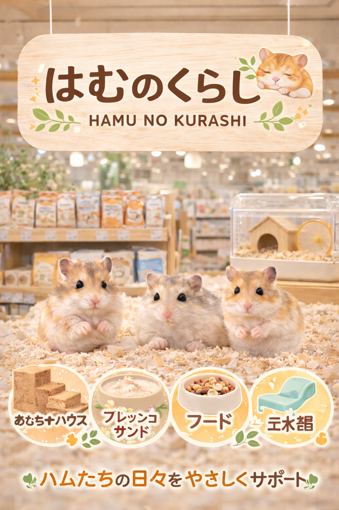
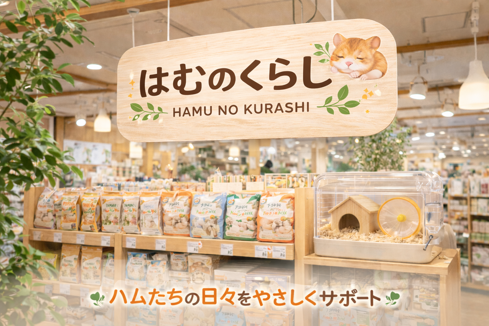

Brand Story
ただ販売する場所ではなく、安心して暮らせる未来をつくる場所。
小さな体で一生懸命生きているハムスター。そのぬくもりが、忙しい毎日にそっとやさしさをくれます。
はむのくらしは、かわいさだけではなく、安心感と続けやすさまで含めた体験を届けます。
ABOUT
はむのくらしは、カフェ体験からお迎え、その後の暮らしまでをやさしくつなぐハムスター専門ブランドです。
Brand Story
小さな体で一生懸命生きているハムスター。そのぬくもりが、忙しい毎日にそっとやさしさをくれます。
はむのくらしは、かわいさだけではなく、安心感と続けやすさまで含めた体験を届けます。

Tone
ベージュ系ナチュラルを軸に、やさしく、子どもっぽすぎない印象に整えます。
Experience
写真を撮りたくなるフォトスポットと、明るい自然光風のトーンで世界観を作ります。
Trust
動物福祉を強く押し出しすぎず、販売方針や説明の丁寧さで安心材料として表現します。
